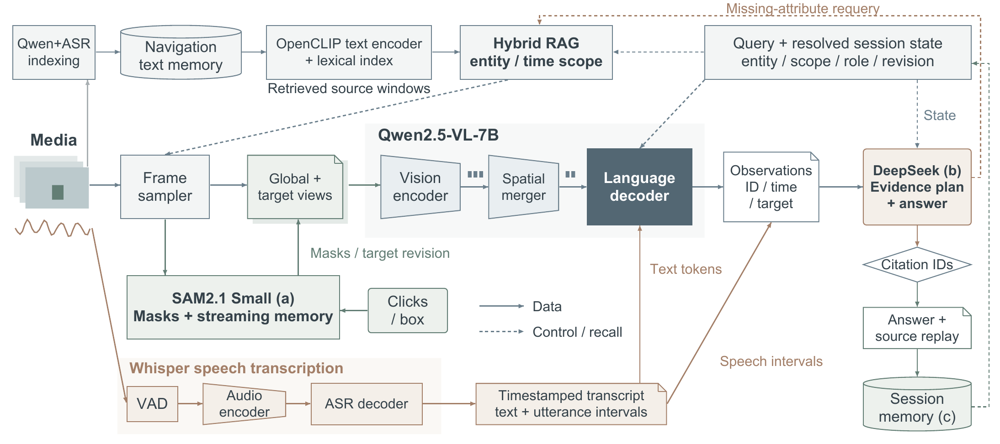

跟随同一个目标
视角变化时，SAM2 将选中的区域传播到后续帧。局部画面呈现目标细节，完整画面保留持有者和邻近物体。
选择一段演练。画面先播放，随后在侧栏依次呈现这一轮的提问与结果。
先询问床品，再切换到手机。第三轮回到床品时，回答引用了第一轮的原始片段。
视角变化时，SAM2 将选中的区域传播到后续帧。局部画面呈现目标细节，完整画面保留持有者和邻近物体。
先召回候选时间窗，再判断问题还缺哪条观察。系统把补看请求限定到相关时段，记录新证据的来源和时间。
记忆把属性与实体、时间和证据绑定。新观察可以修订旧值，切换话题后仍能按实体回取。

EgoSchema 的 500 道题均先读取两个时间窗，仅 5 题追加观察。分窗记录将活动不同阶段的动作与对象带入同一回答过程。
在相同的 4096 词元容量下，插入 96 轮其他实体对话后，来源记忆仍在 32 个检查点取回正确属性，这 32 次回访全部答对。
| 方法 | MVBench | EgoSchema | Video-MME |
|---|---|---|---|
| Qwen2.5-VL-7B | 59.50 | 48.40 | 52.89 |
| EgoGPT-7B | 39.75 | 42.80 | 43.78 |
| EgoRAG 适配 | 56.75 | 56.00 | 56.00 |
| EgoLens | 55.25 | 63.40 | 52.89 |